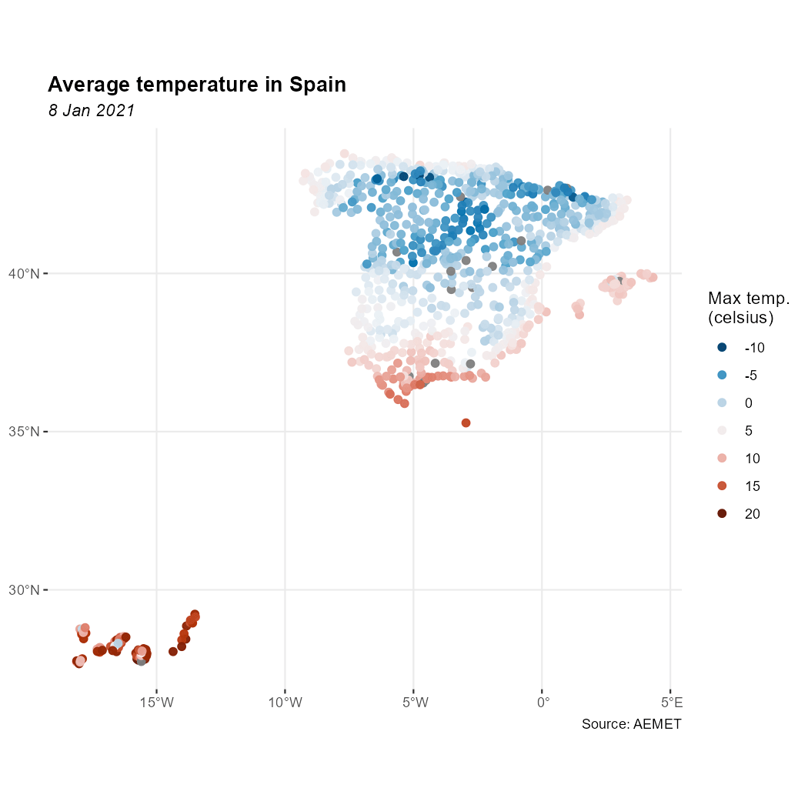

climaemet provides access to meteorological observations, forecasts, alerts and climatology data from the Spanish Meteorological Agency (AEMET). It is part of rOpenSpain, a community that develops R packages for working with Spanish public data.
API key
Get an API key
To download data from AEMET, obtain a free API key from the AEMET OpenData registration page.
Once you have your API key, you can use any of the following methods:
Set the API key with aemet_api_key()
This is the recommended option. Run:
aemet_api_key("YOUR_API_KEY", install = TRUE)Using install = TRUE stores the API key on your local computer so it is available in future R sessions.
Use an environment variable
Alternatively, set the API key as an environment variable for the current session:
Sys.setenv(AEMET_API_KEY = "YOUR_API_KEY")You need to run this command again after restarting R.
Modify your .Renviron file
You can also store the API key permanently in .Renviron. Open the file with:
usethis::edit_r_environ()Then add the following line:
AEMET_API_KEY=YOUR_API_KEYData formats
Tabular results
climaemet returns tabular results as tibble objects. The package also infers column types when possible. For example, date and time columns are parsed as date-time objects and numeric columns are parsed as doubles.
The following call returns a tibble:
# Inspect a tibble.
aemet_last_obs("9434")
#> # A tibble: 12 × 25
#> idema lon fint prec alt vmax vv dv lat dmax ubi pres
#> <chr> <dbl> <dttm> <dbl> <dbl> <dbl> <dbl> <dbl> <dbl> <dbl> <chr> <dbl>
#> 1 9434 -1.00 2026-07-03 02:00:00 0 249 12.7 8 306 41.7 310 ZARA… 995.
#> 2 9434 -1.00 2026-07-03 03:00:00 0 249 13.5 9.4 308 41.7 305 ZARA… 995.
#> 3 9434 -1.00 2026-07-03 04:00:00 0 249 12.2 7.9 312 41.7 305 ZARA… 995.
#> 4 9434 -1.00 2026-07-03 05:00:00 0 249 11.7 7.8 308 41.7 313 ZARA… 995.
#> 5 9434 -1.00 2026-07-03 06:00:00 0 249 11.8 7.6 310 41.7 328 ZARA… 995.
#> 6 9434 -1.00 2026-07-03 07:00:00 0 249 13.4 9.6 311 41.7 315 ZARA… 995.
#> 7 9434 -1.00 2026-07-03 08:00:00 0 249 13.9 9.6 316 41.7 320 ZARA… 995.
#> 8 9434 -1.00 2026-07-03 09:00:00 0 249 13 9.2 306 41.7 308 ZARA… 995.
#> 9 9434 -1.00 2026-07-03 10:00:00 0 249 11.5 6.6 314 41.7 310 ZARA… 995.
#> 10 9434 -1.00 2026-07-03 11:00:00 0 249 10.5 6.8 304 41.7 293 ZARA… 994.
#> 11 9434 -1.00 2026-07-03 12:00:00 0 249 11.6 6.7 317 41.7 303 ZARA… 994.
#> 12 9434 -1.00 2026-07-03 13:00:00 0 249 14.7 8.1 311 41.7 298 ZARA… 993
#> # ℹ 13 more variables: hr <dbl>, stdvv <dbl>, ts <dbl>, pres_nmar <dbl>, tamin <dbl>,
#> # ta <dbl>, tamax <dbl>, tpr <dbl>, stddv <dbl>, inso <dbl>, tss5cm <dbl>,
#> # pacutp <dbl>, tss20cm <dbl>Spatial objects with sf
Data-access functions that support return_sf = TRUE can return spatial sf objects. These objects use the EPSG:4326 coordinate reference system (CRS), corresponding to the World Geodetic System 1984 (WGS 84), with unprojected longitude and latitude coordinates:
# You need to install sf if it is not already installed.
# Run install.packages("sf") to install it.
library(ggplot2)
library(dplyr)
all_stations <- aemet_daily_clim(
start = "2021-01-08",
end = "2021-01-08",
return_sf = TRUE
)
ggplot(all_stations) +
geom_sf(aes(colour = tmed), shape = 19, size = 2, alpha = 0.95) +
labs(
title = "Average temperature in Spain",
subtitle = "8 Jan 2021",
color = "Max temp.\n(celsius)",
caption = "Source: AEMET"
) +
scale_colour_gradientn(
colours = hcl.colors(10, "RdBu", rev = TRUE),
breaks = c(-10, -5, 0, 5, 10, 15, 20),
guide = "legend"
) +
theme_bw() +
theme(
panel.border = element_blank(),
plot.title = element_text(face = "bold"),
plot.subtitle = element_text(face = "italic")
)
Example: temperature in Spain
Additional features
Other package features include:
- Data functions accept vector inputs where the AEMET OpenData API supports them.
-
get_metadata_aemet()retrieves metadata from arbitrary AEMET OpenData API endpoints. -
ggclimat_walter_lieth()creates Walter-Lieth climate diagrams and is the default plotting method used byclimatogram_normal()andclimatogram_period(). . Set
. Set ggplot2 = FALSEto useclimatol::diagwl()instead. - Plotting functions accept additional options through
.... - The example datasets
climaemet_9434_climatogram,climaemet_9434_tempandclimaemet_9434_windsupport the plotting examples.